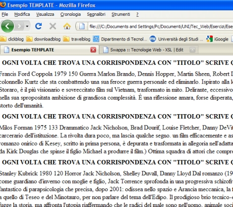
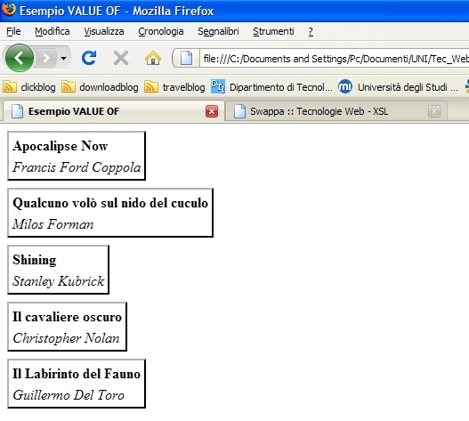
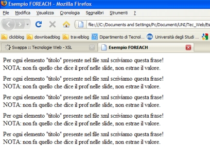
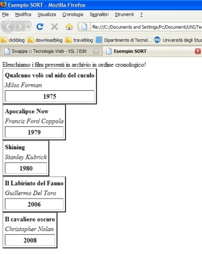
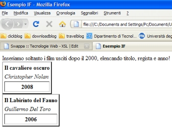
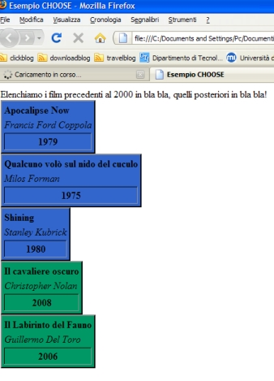
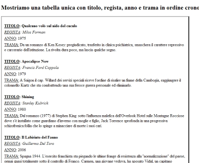

Torna alla pagina di Tecnologie Web
:: Tecnologie Web ::
XSL
Introduzione
XSL (xml stylesheet language) è uno standard per definire fogli di stile XML in altri formati ed è suddiviso in due parti:
- XSLT (XSL Transformation): è un'applicazione XML che permette di specificare delle regole secondo le quali un documento XML viene trasformato in un altro documento.
- XSL-FO (XSL Formatting Object): applicazione XML che permette di descrivere l'aspetto e la disposizione del testo. E' una soluzione alternativa a CSS.
Noi tratteremo solo XSLT.
Gli usi possibili di XSL sono:
- trasformare documenti XML in documenti XHTML
- filtrare ed ordinare dati XML
- definire parti di un documento XML
- formattare i dati in base al loro valore
Funzionamento
Un elaboratore XSLT è un programma che legge contemporaneamente un foglio di stile XSLT e un documento XML di input e converte quest'ultimo in un documento di output in base alle istruzioni fornite nel foglio di stile.
Il processore XSLT segue la struttura gerarchica di un documento XML, individua ciascun nodo grazie alle istruzioni contenute nel foglio di stile XSLT. Quando trova una corrispondenza, vengono applicate al contenuto dell'elemento XML le regole contenute nel foglio di stile. XSLT utilizza la sintassi XPath per identificare gli elementi per i quali trova una corrispondenza.
XSLT lavora su documenti ben formati e non richiede che questi siano per forza documenti validi.
SAX vs. DOM
Sono due processori XML che servono appunto per la trasformazione dei documenti, hanno anche altri scopi ma non li trattiamo.
DOM (Document Object Model): definisce interfacce, proprietà e metodi per manipolare documenti XML.
SAX (Simple API for XML): è un’interfaccia per leggere e manipolare file XML. E' un'API basata su eventi per il parsing di documenti XML.
Differenze:
- modalità di interazione tra le API(Application Programming Interface) e l’applicazione che ne fa uso.
In DOM è indispensabile leggere e sottoporre a parsing tutto il documento prima che il relativo modello a oggetti possa essere messo a disposizione di un'applicazione DOM. Ciò comporta che l'intero documento venga mantenuto in memoria e questo provoca un overhead non indifferente. Questo aspetto rende DOM poco adatto per applicazioni di trasformazione di documenti o per applicazioni che richiedano il parsing incrementale dei dati, come i protocolli di comunicazione e scambio di messaggi. DOM infatti non fornisce alcun supporto esplicito per effettuare il parsing di documenti o la serializzazione di nuovi documenti verso dispositivi di memorizzazione esterni.
In SAX ogni volta che il parser incontra un tag iniziale, un tag finale, dei dati di tipo carattere oppure un'istruzione di elaborazione, lo comunica direttamente al programma client, di conseguenza non bisogna aspettare che l'intero documento venga letto prima di poter agire sui dati presenti all'inizio del documento, perché il documento stesso viene passato al programma pezzo per pezzo, dall'inizio alla fine. Quindi non è necessario che l'intero documento risieda in memoria (cosa che invece avviene con DOM).
Questo comporta - memoria, - tempo di caricamento, + tempo per singolo accesso.
Dichiarazione
Siccome i documenti XSL sono documenti XML, devono iniziare con la solita dichiarazione XML <?xml version=1.0" encoding="ISO-8859-1"?>
Successivamente va dichiarato che si tratta di un foglio di stile, tramite due tipi di dichiarazioni possibili:
<xsl:stylesheet version="1.0" xmlns:xsl="http://www.w3c.org/1999/XSL/Transform">
<xsl:transform version="1.0" xmlns:xsl="http://www.w3c.org/1999/XSL/Transform">
Però è possibile abbreviarle in questo modo:
<xsl:stylesheet>
<xsl:transform>
NOTA: I due tipi di dichiarazioni sono equivalenti, non esiste nessuna differenza tra di loro ed è quindi possibile sceglierli a piacimento.
Nel file XML solitamente è necessario dichiarare a quale file XSL si fa riferimento(esattamente come avviene per i CSS) tramite la seguente sintassi:
<?xml-stylesheet type="text/xsl"
href="nomeFile.xsl"?>
Elementi XSLT
Gli elementi sotto indicati servono soprattutto per filtrare e operare sull'output in base alle nostre esigenze.
NOTA: in tutti gli esempi successivi il file XML di riferimento è il seguente(ovviamente nel campo href ci va il nome del corrispondente foglio di stile xsl):
<?xml version="1.0" encoding="UTF-8"?>
<?xml-stylesheet type="text/xml" href="OutputFilmApplyTemplate.xsl" ?>
<archivioFilm>
<!--elenco dei vari film presenti nell'archivio-->
<film>
<titolo>Apocalipse Now</titolo>
<regista>Francis Ford Coppola</regista>
<anno>1979</anno>
<durata>150</durata>
<genere>Guerra</genere>
<attori>Marlon Brando, Dennis Hopper, Martin Sheen, Robert Duvall</attori>
<trama>
A Saigon il cap. Willard dei servizi speciali riceve l'ordine di
risalire un fiume della Cambogia, raggiungere il colonnello Kurtz
che sta combattendo una sua feroce guerra personale ed eliminarlo.
</trama>
<critica>
Ispirato alla lontana a Cuore di tenebra (1902) di Joseph
Conrad, sceneggiato da J. Milius, splendidamente fotografato da
V. Storaro, è il più visionario e sovreccitato film sul Vietnam,
trasformato in mito. Delirante, eccessivo, diseguale, ricco di
sequenze straordinarie, assai discusso e talvolta estetizzante
nel suo ostentato brio stilistico, nella sua spropositata ambizione
di grandiosa complessità. È una riflessione amara, forse disperata,
sull'imperialismo USA, erede del colonialismo eurpoeo, sulla follia
omicida della civiltà occidentale, sul legno storto dell'umanità.
</critica>
</film>
<film>
<titolo>Qualcuno volò sul nido del cuculo</titolo>
<regista>Milos Forman</regista>
<anno>1975</anno>
<durata>133</durata>
<genere>Drammatico</genere>
<attori>Jack Nicholson, Brad Dourif, Louise Fletcher, Danny DeVito</attori>
<trama>
Da un romanzo di Ken Kesey: pregiudicato, trasferito in clinica
psichiatrica, smaschera il carattere repressivo e carcerario
dell'istituzione. La rivolta dura poco, ma lascia qualche segno.
</trama>
<critica>
un film efficacemente e astutamente polemico sul potere che
emargina i diversi e sul fondo razzistico della psichiatria. La
sostanza del romanzo onirico di Kesey, scritto in prima persona,
è depurata e trasformata in allegoria nell'adattamento scenico che
ne fece Dale Wasserman e che forma la base della sceneggiatura.
(Fu portato in scena nel 1963 da Kirk Douglas che spinse il figlio
Michael a produrre il film.) Ottima squadra di attori che comprende
anche il pellerossa W. Sampson.
</critica>
</film>
<film>
<titolo>Shining</titolo>
<regista>Stanley Kubrick</regista>
<anno>1980</anno>
<durata>120</durata>
<genere>Horror</genere>
<attori>Jack Nicholson, Shelley Duvall, Danny Lloyd</attori>
<trama>
Dal romanzo (1977) di Stephen King: sotto l'influenza malefica
dell'Overlook Hotel sulle Montagne Rocciose dove s'è installato come
guardiano d'inverno con moglie e figlio, Jack Torrence sprofonda in
una progressiva schizofrenica follia che lo spinge a minacciare di
morte i suoi cari.
</trama>
<critica>
Più che un film dell'orrore e del terrore, è un thriller fantastico
di parapsicologia che precisa, dopo 2001: odissea nello spazio e Arancia
meccanica, la filosofia di S. Kubrick. L'aneddotica di S. King diventa
fiaba e rilettura di un mito, di molti miti, da quello di Saturno a quello
di Teseo e del Minotauro, per non parlare del tema dell'Edipo. Il prodigioso
brio tecnico-espressivo è al servizio di un discorso sul mondo, sulla società
e sulla storia. Totalmente pessimista, Kubrick nega e fugge la storia, ma
affronta l'utopia riaffermando che le radici del male sono nell'uomo,
animale sociale, ma non negando, anzi esaltando, la possibilità di una
riconciliazione futura, attraverso il bambino e il suo shining (luccicanza)
e quella di una nuova e diversa concordia.
</critica>
</film>
<film>
<titolo>Il cavaliere oscuro</titolo>
<regista>Christopher Nolan</regista>
<anno>2008</anno>
<durata>152</durata>
<genere>Azione</genere>
<attori>Heath Ledger, Christian Bale, Gary Oldman, Michael Caine</attori>
<trama>
Il crimine organizzato a Gotham City ha le ore contate. Batman, il
tenente Gordon, il nuovo Procuratore Distrettuale e alcuni improbabili
epigoni dell'Uomo Pipistrello in imbottiture da hockey hanno dichiarato
guerra ai criminali. La loro fortuna e i loro dollari, accumulati in una
banca di massima sicurezza, vengono rubati da Joker, un pagliaccio sadico
e mascherato che getterà la città nel disordine e nell'anarchia. Riempite
le tasche di lame, polvere da sparo e lanugine, Joker sfiderà il cavaliere
oscuro di Bruce Wayne e rivelerà il lato oscuro di Harvey Dent, l'eroe
procuratore che applica la giustizia e agisce a volto scoperto.
</trama>
<critica>
Quello che conta nel Cavaliere oscuro è l'enigma della psicologia dei
personaggi: i compagni (Harvey e Gordon) di Batman quanto gli antagonisti
(Joker e Due Facce) non sono semplici caratterizzazioni laterali ma diventano
figure malate di un incubo, sistematicamente inquadrate dal basso (soprattutto Joker)
come un insieme ambiguo e incombente. Apparentemente costruito come film sulla
voracità e sul potere distruttivo del denaro (il film si apre con la realizzazione
di un colpo e la liquidazione di tutti gli esecutori materiali della rapina ad opera
di chi l'ha concepita), Il Cavaliere oscuro si rivela opera della paranoia e del
progressivo affondare dell'eroe senza maschera di Aaron Eckhart (Harvey Dent),
risentito coi compagni e attirato verso il basso da un inafferrabile Joker.
Dalla "caduta" muore Harvey e nasce Due Facce, un reduce-sopravvissuto e
psicopatico quanto l'irriducibile clown di Ledger, di cui il regista non rilegge
le origini, perché Joker è figlio del caos e la sua ferita, aperta in un "sorriso",
è figlia di una leggenda declinabile all'infinito.
</critica>
</film>
<film>
<titolo>Il Labirinto del Fauno</titolo>
<regista>Guillermo Del Toro</regista>
<anno>2006</anno>
<durata>112</durata>
<genere>Horror</genere>
<attori>Sergi Lopez, Doug Jones, Maribel Verdù</attori>
<trama>
Spagna 1944. L'esercito franchista sta piegando le ultime frange
di resistenza alla "normalizzazione" del paese, ormai quasi totalmente
sotto il controllo di Franco. Carmen, una giovane vedova, ha sposato Vidal,
un capitano dell'esercito, e lo raggiunge assieme alla figlia dodicenne Ofelia.
La bambina soffre per la presenza dell'arrogante patrigno e cerca di aiutare la
madre che sta affrontando una gravidanza difficile. Il suo rifugio è costituito
dal mondo delle fiabe che si materializza con la presenza di un fauno che le
rivela la sua vera identità. Lei è la principessa di un regno sotterraneo. Per
raggiungerlo dovrà superare tre prove pericolose.
</trama>
<critica>
Senza i mezzi delle megaproduzioni statunitensi ma con un' accuratezza e
sensibilità che spesso a quelle dimensioni produttive finiscono con lo sfuggire,
Del Toro ci parla di soprusi e di innocenza, di ricerca di un mondo 'altro' in cui
trovare la pace senza però rinunciare alla propria integrità di essere umano in
formazione. Un film per giovani-adulti e per adulti-giovani il suo, meno facile
da 'vendere' a un pubblico ben definito ma, anche per questo, più interessante.
</critica>
</film>
xsl:template
Per operare sull'output in base all'input bisogna introdurre dei modelli nel foglio di stile XSLT. Ogni modello è rappresentato da un elemento <xsl:template> che definisce l'inizio di un template. Ogni elemento <xsl:template> contiene delle regole da applicare quando uno specifico nodo viene trovato.
L'attributo match="/" definisce la corrispondenza, cioè è usato per associare il template con uno o più elementi XML.
Un modello come risultato dell'output può anche contenere elementi riportati in maniera letterale come ad esempio elementi di markup. La regola fondamentale da rispettare, se si inseriscono markup in output, è che si deve produrre un codice XML ben formato, infatti avevamo visto che anche lo stesso foglio di stile deve essere ben formato. In poche parole se nell'output, creato col foglio di stile, si inseriscono markup questi devono rispettare le regole già viste nelle nozioni fondamentali legate ai documenti XML ben formati.
Esempio:
<?xml version="1.0" encoding="UTF-8"?>
<xsl:stylesheet xmlns:xsl="http://www.w3.org/1999/XSL/Transform" version="1.0">
<xsl:template match="titolo">
<html>
<head><title>Esempio TEMPLATE</title></head>
<body>
<b>
OGNI VOLTA CHE TROVA UNA CORRISPONDENZA CON "TITOLO"
SCRIVE QUESTA FRASE e tutti i dati che trova
</b>
</body>
</html>
</xsl:template>
</xsl:stylesheet>
OUTPUT:

xsl:value-of
L'elemento <xsl:value-of> viene utilizzato per estrarre un valore da un elemento XML e aggiungerlo al flusso di output della trasformazione. Il valore dell'elemento corrisponde al contenuto dell'elemento stesso dopo che tutti i tag sono stati rimossi.
Esempio:
<?xml version="1.0" encoding="UTF-8"?>
<xsl:stylesheet xmlns:xsl="http://www.w3.org/1999/XSL/Transform" version="1.0">
<xsl:template match="film">
<html>
<head><title>Esempio VALUE OF</title></head>
<body>
<table border="2" cellpadding="3" cellspacing="4">
<tr><b> <xsl:value-of select="titolo" /> </b></tr>
<tr><i> <xsl:value-of select="regista" /> </i></tr>
</table>
</body>
</html>
</xsl:template>
</xsl:stylesheet>
NOTA: in questo esempio il value-of restituisce tutti i film presenti in archivio perché ho messo come MATCH l'elemento film, invece dell'elemento radice /. Altrimenti senza un foreach dovrebbe restituire un unico elemento.
OUTPUT:

xsl:for-each
L'elemento <xsl:for-each> viene utilizzato per selezionare ogni elemento XML corrispondente ad un dato XPath.
Esempio:
<?xml version="1.0" encoding="UTF-8"?>
<xsl:stylesheet xmlns:xsl="http://www.w3.org/1999/XSL/Transform" version="1.0">
<xsl:template match="film">
<html>
<head><title>Esempio FOREACH</title></head>
<body>
<xsl:for-each select="titolo"></xsl:for-each>
Per ogni elemento "titolo" presente nel file xml scriviamo questa frase!<br/>
NOTA: non fa quello che dice il prof nelle slide, non estrae il valore.
</body>
</html>
</xsl:template>
</xsl:stylesheet>
OUTPUT:

xsl:sort
L'elemento <xsl:sort> viene utilizzato per ordinare l'output.
Esempio:
<?xml version="1.0" encoding="UTF-8"?>
<xsl:stylesheet xmlns:xsl="http://www.w3.org/1999/XSL/Transform" version="1.0">
<xsl:template match="/">
<html>
<head><title>Esempio SORT</title></head>
<body>
Elenchiamo i film presenti in archivio in ordine cronologico!
<xsl:for-each select="archivioFilm/film">
<xsl:sort data-type="number" select="anno"/>
<table border="2" cellpadding="3" cellspacing="4">
<tr><b><xsl:value-of select="titolo"></xsl:value-of></b></tr>
<tr><i><xsl:value-of select="regista"></xsl:value-of></i></tr>
<tr><th><xsl:value-of select="anno"></xsl:value-of></th></tr>
</table>
</xsl:for-each>
</body>
</html>
</xsl:template>
</xsl:stylesheet>
OUTPUT:

xsl:if
L'elemento <xsl:if> contiene una serie di istruzioni che verranno eseguite solo se la condizione specificata è vera. La condizione viene messa sotto forma di attributo.
Esempio:
<?xml version="1.0" encoding="UTF-8"?>
<xsl:stylesheet xmlns:xsl="http://www.w3.org/1999/XSL/Transform" version="1.0">
<xsl:template match="/">
<html>
<head><title>Esempio IF</title></head>
<body>
Inseriamo soltanto i film usciti dopo il 2000, elencando titolo, regista e anno!
<xsl:for-each select="archivioFilm/film">
<table border="2" cellpadding="3" cellspacing="4">
<xsl:if test="anno > 2000">
<tr><b><xsl:value-of select="titolo"></xsl:value-of></b></tr>
<tr><i><xsl:value-of select="regista"></xsl:value-of></i></tr>
<tr><th><xsl:value-of select="anno"></xsl:value-of></th></tr>
</xsl:if>
</table>
</xsl:for-each>
</body>
</html>
</xsl:template>
</xsl:stylesheet>
OUTPUT:

xsl:choose / xsl:when / xsl:otherwise
L'elemento <xsl:choose> viene utilizzato insieme agli elementi xsl:when e xsl:otherwise per esprimere condizioni multiple.
Esempio:
<?xml version="1.0" encoding="UTF-8"?>
<xsl:stylesheet xmlns:xsl="http://www.w3.org/1999/XSL/Transform" version="1.0">
<xsl:template match="/">
<html>
<head><title>Esempio CHOOSE</title></head>
<body>
Elenchiamo i film precedenti al 2000 in blu chiaro, quelli posteriori in verde!
<xsl:for-each select="archivioFilm/film">
<xsl:choose>
<xsl:when test="anno < 2000">
<table border="2" cellpadding="3" cellspacing="4" bgcolor="#3366CC">
<tr><b><xsl:value-of select="titolo"></xsl:value-of></b></tr>
<tr><i><xsl:value-of select="regista"></xsl:value-of></i></tr>
<tr><th><xsl:value-of select="anno"></xsl:value-of></th></tr>
</table>
</xsl:when>
<xsl:otherwise>
<table border="2" cellpadding="3" cellspacing="4" bgcolor="#009966">
<tr><b><xsl:value-of select="titolo"></xsl:value-of></b></tr>
<tr><i><xsl:value-of select="regista"></xsl:value-of></i></tr>
<tr><th><xsl:value-of select="anno"></xsl:value-of></th></tr>
</table>
</xsl:otherwise>
</xsl:choose>
</xsl:for-each>
</body>
</html>
</xsl:template>
</xsl:stylesheet>
OUTPUT:

xsl:apply-templates
Per default un elaboratore XSLT legge il documento XML di input dall'alto verso il basso, iniziando cioè dall'elemento radice e discendendo all'interno dell'albero degli elementi. Ciò significa che il modello del nodo padre verrà applicato prima del modello dei relativi figli.
L'elemento <xsl:apply-templates> permette di modificare l'ordine secondo il quale vengono attraversati i nodi. Si può anche fare in modo che alcuni elementi non vengano elaborati.
Riassumendo quindi l'elemento permette di impostare in maniera esplicita l'ordine di elaborazione.
L'attributo select contiene un'espressione XPath che indica all'elaboratore XSLT che le regole verranno applicate solamente ai nodi che corrispondono al valore dell'attributo.
NOTA: l'ordine con cui vengono definiti i modelli all'interno del foglio di stile non ha alcuna importanza, conta solamente l'ordine con il quale gli elementi appaiono nel documento di input.
Esempio:
<?xml version="1.0" encoding="UTF-8"?>
<xsl:stylesheet xmlns:xsl="http://www.w3.org/1999/XSL/Transform" version="1.0">
<xsl:template match="/">
<html>
<head><title>Esempio APPLY-TEMPLATE</title></head>
<body>
<xsl:apply-templates/>
</body>
</html>
</xsl:template>
<xsl:template match="film">
<p>
<tr><b><u>TITOLO</u>:
<xsl:value-of select="titolo"></xsl:value-of>
</b></tr>
<tr><i><u>REGISTA</u>:
<xsl:value-of select="regista"></xsl:value-of>
</i></tr>
<tr><u>ANNO</u>:
<xsl:value-of select="anno"></xsl:value-of>
</tr>
<tr><u>TRAMA:</u>
<xsl:value-of select="trama"></xsl:value-of>
</tr></p>
</xsl:template>
<xsl:template match="archivioFilm">
<h2>Mostriamo una tabella con titolo, regista, anno e trama in ordine cronologico!</h2>
<table border="3" cellpadding="4" cellspacing="5" width="60%">
<xsl:apply-templates select="film">
<xsl:sort data-type="number" order="ascending" select="anno"></xsl:sort>
</xsl:apply-templates>
</table>
</xsl:template>
</xsl:stylesheet>
OUTPUT:

xsl:call-template
L'elemento <xsl:call-template> viene utilizzato per invocare un template identificandolo attraverso un nome, a differenza di apply-templates quindi non cambia il nodo corrente.
Sintassi:
<xsl:call-template name="nome template">
xsl:copy-of
L'elemento <xsl:copy-of> viene utilizzato per copiare un insieme di nodi nell'albero risultante senza che vengano applicate conversioni a stringhe come accadrebbe con l'utilizzo dell'elemento xsl:value-of.
Riferimenti Incrociati
Un sistema per gestire i riferimenti incrociati tra elementi sono le chiavi XSL.
Ogni chiave è composta dalla tripla:
- il nodo che possiede la chiave match
- il nome della chiave name
- il valore della chiave use
e vengono dichiarate utilizzando la seguente sintassi:
<xsl:key name="..." match="..." use="..."/>
Funzione key
La funzione key si esprime tramite la seguente sintassi:
node-set key(string, object)
dove:
- l'argomento string: è il nome di una chiave definita da un elemento xsl:key
- l'argomento object: viene convertito dalla funzione string in valore alfanumerico.
Viene restituito come valore l'insieme dei nodi che hanno una chiave dal valore use uguale al risultato della conversione di object.
XSLT 2.0
XSLT 2.0 è diventato felicemente recommendation W3C nel Gennaio 2007 ha introdotto tre principali novità:
- istruzioni per raggruppare elementi
- istruzioni per gestire il testo tramite espressioni regolari
- istruzioni per gestire la formattazione di numeri e date
XSL vs. XQuery
- XSLT 1.0: vede XML come strumento per la multicanalità, infatti è possibile effettuare trasformazioni verso diversi formati.
- XQuery 1.0: vede XML come strumento per descrivere documenti semistrutturati, infatti è possibile effettuare interrogazioni su frammenti di documenti.
Entrambi permettono di selezionare frammenti di XML e di costruire nuovi output XML.
Differenze:
- XSL
- si caratterizza per funzioni che destrutturano e ristrutturano XML, tramite xsl:template
- parsa l'albero del documento ad ogni trasformazione
- è implementato da browser o server web che sono strumenti di editing e pubblicazione; si concentrano sulla formattazione e composizione di risorse.
- XQuery
- si caratterizza per funzioni di join e per una tipizzazione forte dei dati
- è implementato da Database che sono strumenti di archivio; si concentra quindi sulla sicurezza di gestione e sull'efficienza di interrogazione.
Torna alla pagina di Tecnologie Web